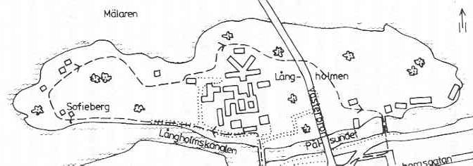

|
Ur Vattenvägar - 21 promenader i Stockholm, Bo Ancker, 1980
Till Långholmen leder två broar. Vi ska nyttja bägge i den här promenaden. Västerbron kan också sägas leda dit, eftersom det går trappor ner på bägge sidor från bron. Jag kan dock aldrig tänka mig, att någon ifrån söder kommande tar sig ut på ön den vägen och då går miste om den fina utsikten utmed Pålsundet. Är det i den grönskande tiden, så är utsikten in mot stan något av det vackraste vi har i hela Stockholm. Ni kan ju bara försöka räkna, hur många gånger den avbildats av mer eller mindre kända konstnärer. Tyvärr kan Pålsundsparken inte rekommenderas som en plats att slå sig ner i, för där är säkert redan upptaget av ett s k klientel, som borde ha det bättre på många sätt. Vi vandrar över "Suckarnas Bro", som den naturligen kallas för, Långholmsbron. Egentligen är detta fel, då en sådan bro ska gå mellan ett häkte och en domstolslokal över en trafikled, helst en kanal. Bron ska också vara täckt. Om man ska vara noga. Beteckningen minner annars väl om de öden, som åsyftas. Fängelse har här varit i nästan 300 år, och uttrycket "att sitta på Långholmen", betecknande intagning i fängelse i största allmänhet, torde komma att hänga i mycket länge. Jämför med uttrycket "sitta på Beckomberga". Det finns visst ett par dussin öar bara i stockholmsområdet, både i Mälaren och i Skärgården, som heter Långholmen. Gemensamt för dem alla är, att de är långsträckta. Den här ligger i Mälaren, vid Riddarfjärden, och är nära enochenhalv kilometer på längden och inte fullt en halv på bredaste stället. Från början lär det inte ha varit mycket till ö alls, och att Kronan la beslag på den, det var ingenting som hetsade upp någon. När man började utnyttja platsen för korrektionsändamål, så var det första, som uslingarna fick ta sig för med, att fylla på med jord i skrevorna, ett obehagligt arbete. Det var nämligen inte alls jord från början utan muddringsmassor, som kom i stora, stinkande pråmar från Stockholms Ström, Barnhusviken och andra ställen. Dyn innehöll avloppsrester, industriavfall, kattlik och allsköns osundheter. Läs i August Strindbergs fängslande "Sagor" den som heter "När träsvalan kom i getapeln", så får ni en i det närmaste autentisk skildring av, hur den första tiden bör ha tett sig här ute. Vill ni veta, hur det kändes att sitta i fängelse i modern tid så att säga, så läs i Ivan Oljelunds memoarer, om hur han avtjänade sitt straff här efter förräderimålet år 1916. Han fick tretton månaders fängelse för det och satt här i en av de beryktade flyglarna. Jag har gjort ett par stora radiointervjuer, att bevaras för all framtid, med honom. Minns kanske mest min häpnad över att han beskrev, hur glad han kom att känna sig, när han flyttades från Häktet på Kungsholmen till Långholmen: därför att på det förra stället, där var golvet av kall, död sten, men på Långholmen var det trägolv. Trä det var ju någonting organiskt i alla fall. Jag minns också, att han berättade om hur han numera så gott som dagligen gick hit ut och stod och såg en stund upp mot den glugg, bakom vilken han suttit och längtat ut. Och läst Nordisk Familjebok från A till Ö, han hade ju gott om tid. Oljelund bodde i Heleneborgsgatan 34 de sista åren av sitt liv. Medan ni håller på, så kan ni ju också läsa Josef Kjellgrens prisbelönta roman - hans första f ö - "Människor kring en bro" från 1933. Ni får där en fin, handfast skildring av hur det gick till, när Västerbron byggdes. Och där spelar ju Långholmen givetvis en stor roll. Nu står Långholmsfängelset tomt, och en lång, mörk epok är äntligen till ända. Den som begynte med bland annat de där stenhuggande straffångarna, som vi berättar om i Essinge-promenaden, och som tog slut i och med att Rättspsykiatriska Klinikens sista flyttlass gick för något år sedan. Ska man se pessimistiskt på utvecklingen - vilket tydligen den nyligen framtagna Långholmsutredningen bestämt sig för att göra - så förefaller fängelsebyggnadernas dagar vara räknade. Liksom en hel del av den kringliggande bebyggelsens också. Det vore stor skada, ber jag också att få utbrista. Man skulle effektivt kunna ladda ur anläggningen och namnet genom att låta detta få bli konstnärsateljeer och grafikverkstäder och liknande för gott. Särskilt som det ju är så ont om stora lokaler av det slaget i vår huvudstad. Låt Långholmsbyggnaderna stå kvar, riv bort gallren, släpp in luft och ljus och låt tusen konster blomma! Förra sensommaren strövade jag omkring fängelset, och då var det så öppet, att det bara var att stiga på genom dörrar på vid gavel. Jag är ju en strövare med sinne för att leta upp utmaningar. Detta var en sådan, men jag blev inte därinne så länge, eftersom jag upptäckte, att om inte vi tar byggnaderna i besittning, så gör andra det illa kvickt. Om de inte funnits där länge redan: så stora råttor har jag inte mött, sedan jag snokade omkring i de gamla befästningsverken på Norra Värmdö! Varning på sin plats, alltså. Samma dag som jag var där, kom jag i samspråk med en vänlig dam, som höll på att piska mattor. En bofast med andra ord. Hon var inte glad alls, för alla där ute hade just då fått en definitiv uppsägning från kommunen, och nu var det snart dags att flytta. Det fanns, som alltid i områden av detta slag, folk som bott där i generationer. De flesta ursprungligen av fängelsepersonalen. Nu var det bara till att börja packa. Hur är då läget i dag? Det är som sagt dåligt och föga hoppingivande. Man vill riva hela kärnfängelset plus en del annan stenbebyggelse, gångvägarna ska bli permanentade för det ska också bli parkeringsplats, vad trodde ni? Hyresgästerna ska bort, som sagt, och all verksamhet ska rutas in, öronmärkas och tråkas till. Och här som alltid varit så fint och trivsamt mitt i den stora tragiken, som präglat platsen. Nog måste det finnas andra alternativ? Man får väl kalla på almräddare och mullvadar, ifall myndigheterna är för oresonliga. Om Långholmen som ö, omgiven av närmast klassiska vattenvägar, ska ni veta, att den sedan länge "sönderfallit" i två delar. Man kan säga att Västerbron är delaren. Den västra delen, utåt, har både kala klippor och en vacker topografi, där den låga bebyggelsen smälter väl in. Den östra, inåt stan, har stora skogsbestånd av bland annat ekar och påminner ibland om Djurgårdsnaturen. Floran är varierad och intressant än i dag, säger de som begriper sådant. Men låt oss nu äntligen komma iväg, vi ska gå åt vänster mellan stenhusen. Det första huset på vänster hand, där vi viker om hörnet, har hetat Underofficershuset länge. Ordningen här ute bland de anställda var nämligen från början och ganska länge rent militär. Fång(vårds)sergeant var till exempel en titel, och sergeanten var ju underofficer.

Rasp- och Spinnhus betecknades detta som i gångna tider. Det senare syftade naturligtvis på, att fångarna sysselsattes med enklare textil verksamhet: väva säckar och göra överdragskläder åt Försvaret t ex. Uttrycket "rasp" kan vara litet knepigare, men annars så utsäger det precis vad det handlade om: man sattes att raspa, riva i smulor barken från vissa träd, som sedan användes som färgämne bl a. Trista, smutsiga och monotona "arbeten" lämpliga åt personer, som dömts till just straff-arbete. När vi går utmed fängelsemuren, på utsidan, ser vi rester av vaktkurer och bastanta taggtrådsstängsel. Jag känner åtskilliga män i staten, också rätt högt uppsatta, som vankat fram och tillbaka här uppe på krönet i ljusa sommarnätter eller svinkalla vintergryningar tjänande till en del av sitt magra uppehälle under studieåren som extra vaktkonstaplar på Långholmen. Det känns närmast som en lättnad att få peka ut nästa byggnad, den här på höger hand utanför muren, där vägarna delar sig. Det är helt enkelt en tvättstuga. Vi tar den vänstra vägen, den närmast vattnet naturligtvis. Nu är det Långholmskanalen vi går utmed, och här är det mest båthus och förtöjningsbryggor ett bra tag. Rakt över på Reimersholme kom jag en lördagskväll strövande på cykel i de tidiga tonåren. Där höll brandkåren då på med att släcka en torvbrand. Det rök inte så litet, och då vaknade journalisten, reportern i mig. Jag kastade mig på cykeln och ilade hem till Östermalm. Där tog jag telefonen och ringde till några tidningar, en notisjägare såg dagens ljus. I söndagsnumret av Dagens Nyheter och av Social-Demokraten för den 15 juni 1941 togs det in. På måndagen var jag på redaktionerna och hämtade mitt första honorar. Jag fick 15 kr av DN men bara 10 hos sossarna. Min äldre bror ansåg för sin del, att det var jag själv som tänt på . . . Ett stort och ganska högt berg reser sig på vår högra sida, det är det som vi håller på att gå runt. Där uppe finns lundar och små lummiga sprickor, som får en att baxna. Folket i Högalid betraktar med rätta detta som en förnämlig del av deras revir. Så för det mesta är det nog "upptaget". Den allra yttersta udden, den västra, har jag inte funnit så intressant, så vi följer vägen mellan de härliga gamla trähusen - tala om snickarglädje. Sofieberg heter detta, som alltid med sådana namn uppkallat efter en älskad maka. Vi passerar flera hus i närheten och betraktar dem så försynt vi kan. När vi kommer till en stentrappa på höger hand, så tar vi den och står så vid öns mest kända byggnad, näst fängelset: Karlshäll. Den är uppförd år 1838 men blev direkt berömd först, då Brännvins-Smithen drog in där och byggde om och till. Ni kan ju börja med att beundra hans fristående biljardsalong, som också nyttjats till musikpaviljong. På senare år var här ett något dystert långvårdshem, men det är borta. Att här var fint och pampigt i fornstora dar, det ska inte vara svårt att tänka sig. Vi går en gammal vacker landsväg, som bitvis kantas av ett arbetat trästaket. Vi kommer strax bakvägen till huvudentren: Karlshälls Grindstuga, som konstnären Fritz Sjöström känt sig inspirerad i många gånger. Gina försiktigt genom trädgårdens kolonilotter, och vi står vid en anhopning av de gamla tjänstebostäderna. Stora och Lilla Knapersta är namnet på de närmaste. Följer man vägen ner till vänster - det är inte så långt - så når man den gamla Sjötullen och flera tilltalande byggnader. Här finns också den enda bryggan, där mer eller mindre reguljär trafik kan landa med större båtar. Vi fortsätter in mot Västerbron och är snart tillbaka vid fängelset igen. Innan dess har vi passerat personalbostaden Gråbo på höger hand, den vill man riva bland det första, om man får som vi fruktar. I Stora Henriksvik på vänster hand hålls en del verksamhet av kriminalvårdande natur ännu till en tid. Den eleganta, färgglada direktörsvillan, som vänder ryggen åt eländet, känner vi nog bäst från sjösidan. Följ inte vägen, som går ut mot stranden där, för ni hamnar i rena moraset. Gå nu upp på en av de högsta punkterna och skåda in mot Centralfängelset och dess tårtbitsuppdelade rastgård. Här är det lämpligt att ägna de tusen sinom tusen uslingarna en tanke och bara hoppas, att de fick någon sorts bättre tillvaro, när de en gång kom ut. Alldeles inpå oss, inte ingående i själva huvudbyggnaden, har vi den fruktade Fasta Avdelningen. Vi tar oss under Västerbron så fort som möjligt, för just här är ganska trist. Är det någon, som absolut vill bada eller duscha, så följ bara pilarna. Går man den södra sidan fram bortom bron, så når man efter ett tag Mors stuga. Det är alldeles intill friluftsscenen, och där har jag ätit några riktigt goda smörgåsar helt nyligen. Vi rör oss nu i ett rent parkområde och fortsätter efter hand snett ner åt höger mot varvsbebyggelsen intill Pålsundet. Vi ska över den andra bron där nere. Då vi passerar in på det yttre varvsområdet, ser vi ett lustigt hus på höger hand innan bron. Det är den gamla varvskrogen "Fördärvet", där jobbarna fuktade sina surt förvärvade slantar på den gamla tiden, som också kallades god. Det röda tvåvåningshuset högre upp är den s k Mahognyvillan även kallad Slipstugan. Mälarvarvet är snart stadens sista varv, men det ska också bort, ifall de där vi talat om tidigare får som de vill. Här har man lagat färjor och ångslupar så det stått härliga till, men man är inte främmande för att rycka ut och laga klockspelet i stadshustornet heller. Till det inre området äger obehöriga inte tillträde. Lördagar och söndagar är här stängt och reglat. Gå nu över Pålsundsbron, och ni lämnar Långholmen och en förhoppningsvis tänkvärd promenad bakom er. Ön saknar verkligen sin like i Stockholm! |